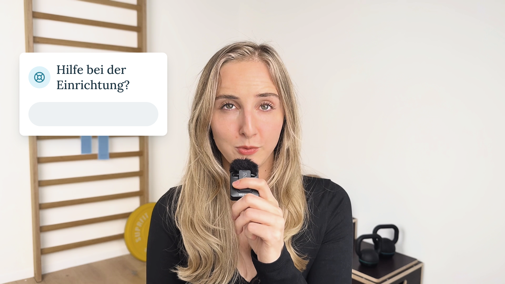
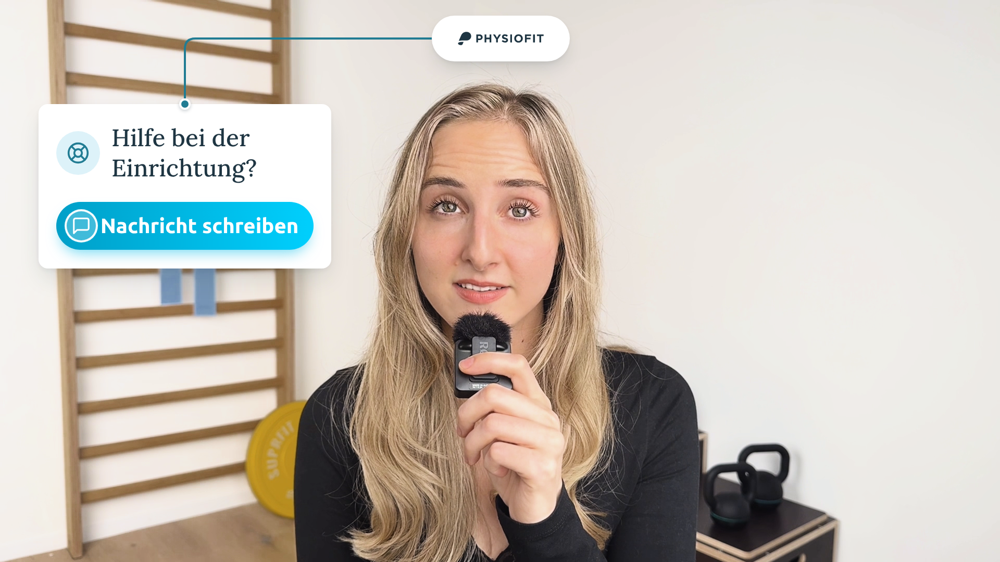
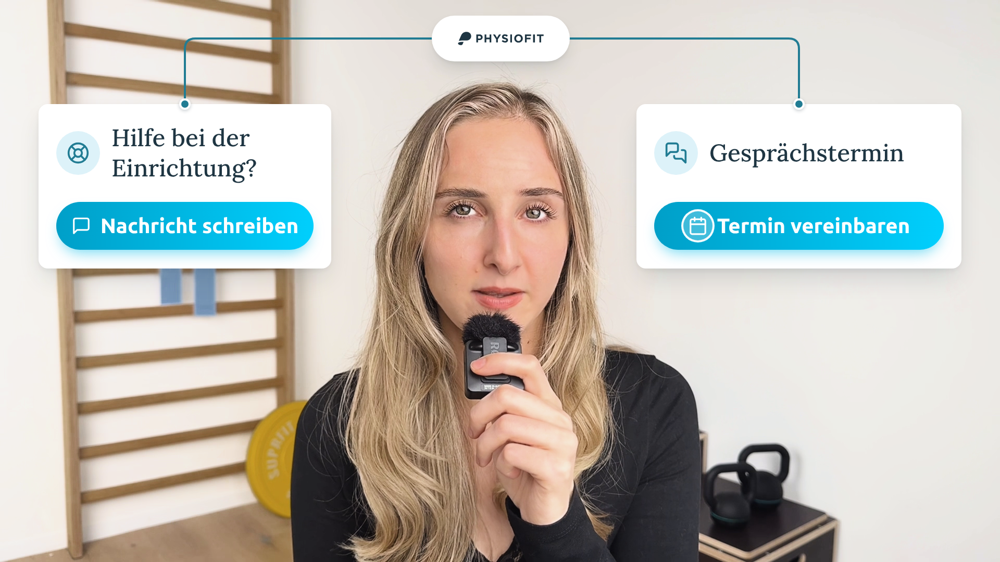
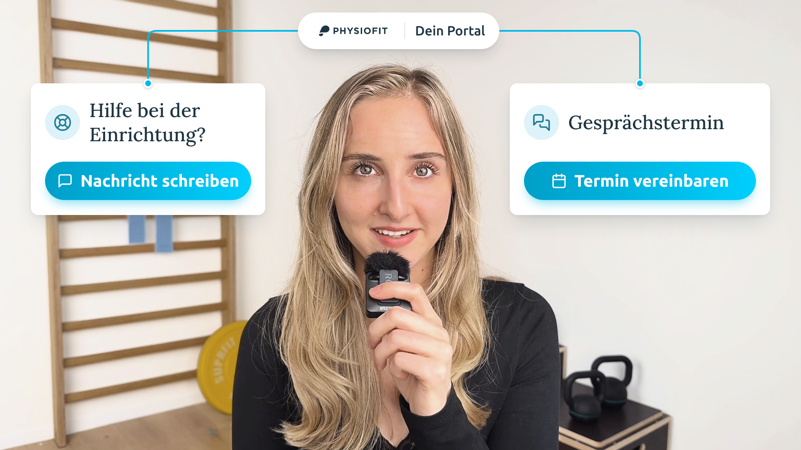

7,06 s · 1920×1080 · nur O-Ton, keine Musik und keine Soundeffekte. Benaja bleibt die ganze Zeit im Bild; alle Animationen erscheinen daneben, im Stil der Abschluss-Karten aus dem finalen Video („Fragen zur Abrechnung?“ / „Kurze Sprechstunde“). Die Standbilder zeigen den Schlüsselmoment jeder Einstellung.

„Wenn du Hilfe bei der einmaligen Einrichtung benötigst,“
Karte links landet als Platzhalter und füllt sich: Rettungsring-Icon, Titel „Hilfe bei der Einrichtung?“. Der Button bleibt noch grau.

„schreib uns eine Nachricht“
Der Button füllt sich in Cyan: „Nachricht schreiben“, dann ein Tipp darauf. Auf „uns“ erscheint oben die Physiofit-Pille, eine Petrol-Linie verbindet sie mit der Karte.

„oder vereinbare einen Gesprächstermin“
Karte rechts: „Gesprächstermin“ mit Button „Termin vereinbaren“ und Tipp. Die zweite Linie läuft von der Physiofit-Pille zur rechten Karte.

„über dein Portal.“
Die Pille öffnet sich zu „Physiofit | Dein Portal“, beide Linien leuchten in Cyan: Nachricht und Termin laufen über dasselbe Portal. Endbild des Videos.